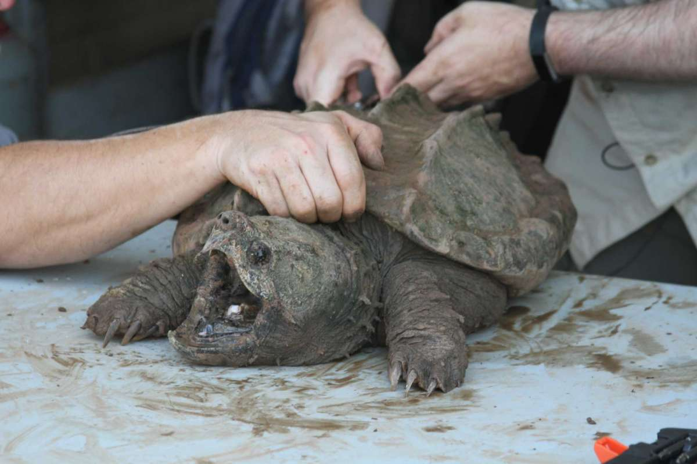
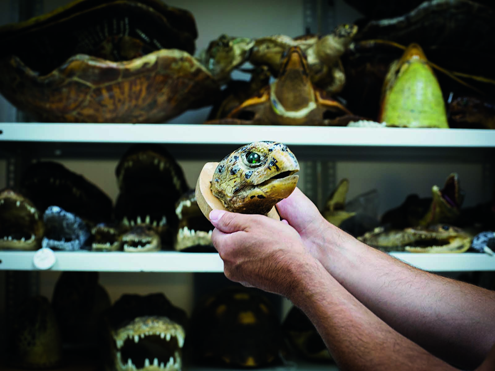
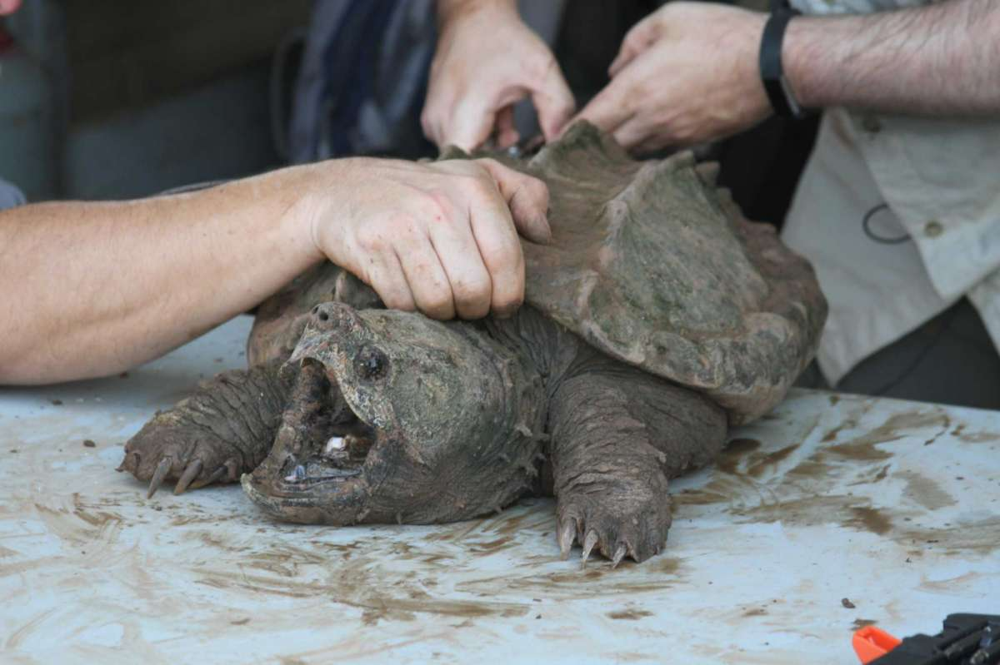
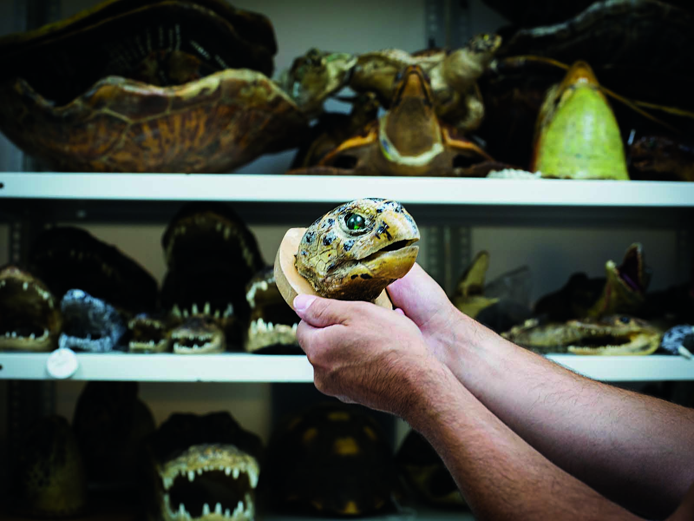

Plastic Pollution
Description:
Pollution, particularly in aquatic environments, poses a significant threat to turtles. Chemical pollutants, including pesticides, heavy metals, and oil spills, contaminate water bodies and affect the health of turtles. Plastic pollution is another major concern, as turtles frequently mistake plastic debris, such as bags and discarded fishing gear, for food or become entangled in it, leading to ingestion and entanglement, which can be fatal. Plastic pollution is prevalent in both marine and freshwater environments.
Consequences:
- Ingestion - Turtles often mistake plastic debris, such as bags, balloons, and plastic fragments, for food beacause they are unable to tell the difference between plastic and their natural preys, suc as jellyfish or algae. Ingestion of plastic can cause clogs in their digestive tract, which will result in internal damage, starvation, and death.
- Entanglement - Turtles can become caught in discarded fishing nets, lines, and other plastic trash. These entanglements can limit their movement, impair their ability to swim and feed, and possibly result in injuries. Turtles can die as a result of such entanglements, which can make them more vulnerable to predetors, drowning, and diseases.
Prevention Methods:
- Proper waste management - Proper disposal and recycling of plastic waste are essential. To prevent plastic from entering water bodies and ecosystems, governments and communities should establish and implement effective waste management systems, including recycling programs.
- Education and awareness - Raising awareness about the impacts of plastic pollution on turtles and the environment is crucial. Educational campaigns can inform the public about the importance of reducing plastic consumption and the proper disposal of plastic waste.
- Beach clean-ups - Plastic garbage can be removed from turtle nesting places and coastal areas by organizing and participating in beach clean-up projects. Regular cleanups can help to keep plastics out of the ocean and lower the risk of turtles eating or being entangled in them.
- Reducing the use of plastic - Individuals can minimize their use of single-use plastics such as straws, bags, bottles, and utensils. Opting for reusable alternatives or eco-friendly materials can significantly reduce plastic waste.
The following link is to an organization that helps the community reduce plastic Pollution, The SeaChange Organization.
Destruction of Nesting Sites


Description:
The destruction of turtle nesting sites is a significant concern for the survival of turtle populations, particularly for those species that rely on specific coastal areas for reproduction. Turtles rely on specific nesting beaches to lay their eggs, but these habitats are vulnerable to coastal development, erosion, and human activities such as sand mining or beachfront construction. The destruction of nesting sites threatens the survival and reproductive success of turtle populations. It disrupts natural nesting behaviors, reduces nesting habitat availability, and increases the vulnerability of eggs and hatchlings to various risks. Protecting and conserving turtle nesting sites through habitat preservation, coastal management, and public awareness are crucial for the long-term survival of these remarkable creatures.
Consequences:
- Disruption of Life Cycle - Turtle nesting places are critical for the reproductive life cycle to be completed. Turtles' natural nesting practices are disrupted when nesting sites are destroyed. They may be driven to nest in poor or unsuitable locations, resulting in lower hatching success and hatchling survival rates.
- Increased Predation Vulnerability - Destruction of nesting sites often exposes eggs and hatchlings to increased predation risks. Without natural protection from vegetation or suitable nesting conditions, nests become more accessible to predators such as raccoons, dogs, and birds. Higher predation rates can significantly impact the survival of eggs and hatchlings.
- Genetic Impacts - Turtle nesting places are critical for preserving genetic variation within populations. Turtles are constrained to fewer and more fragmented nesting habitats, which can lead to increased genetic isolation. Inbreeding, poorer genetic diversity, and decreased adaptability to changing environmental conditions can all result from reduced gene flow.
Prevention Methods:
- Nesting Site Restoration - Efforts can be made to restore and rehabilitate degraded nesting sites. This can involve measures like beach nourishment to restore eroded beaches, dune restoration to create suitable nesting habitats, and vegetation restoration to provide natural cover and protection for nests.
- Protecting and Monitoring Nesting sites - Implementing nest protection measures, such as marking and fencing off nests, can prevent predation and human disturbance. Regular monitoring of nesting sites allows for the collection of data on nesting activity, nest success rates, and population trends, aiding in conservation efforts.
- Educating and Raising the Public Awareness - Raising awareness about the importance of turtle nesting sites and the threats they face is crucial. Public education campaigns can inform local communities, tourists, and stakeholders about responsible beach practices, such as avoiding disturbance of nesting turtles, not littering, and adhering to regulations protecting nesting sites.
- Habitat Conservation - Identifying and protecting important nesting habitats is essential. Establishing protected areas, such as marine reserves or wildlife sanctuaries, can help conserve critical nesting sites and ensure their long-term preservation.
The following link is to an organization that helps the community protect the nesting sites of tuetles, Seacology supports sea turtles' race for survival .
Overexploitation and Illegal Trade
 



Description:
Overexploitation and illegal trade pose significant threats to turtle populations globally. The demand for turtles and their products, driven by cultural, medicinal, and commercial interests, has led to the unsustainable harvesting and smuggling of these vulnerable species. Turtles are often targeted for their meat, eggs, shells, and body parts, making them a valuable commodity in illegal wildlife trade. Poaching and unsustainable harvesting practices can decimate turtle populations, particularly in regions where they are considered a delicacy or used in traditional medicine. The demand for turtle products perpetuates illegal trade, further threatening their survival.
Consequences:
- Habitat Disruption - Overexploitation can also disrupt habitats indirectly. For instance, excessive removal of adult turtles, which often play key roles in maintaining ecosystems, can lead to imbalances within ecosystems. Turtles contribute to nutrient cycling and help control populations of prey species, so their decline can have cascading effects on the entire ecosystem.
- Population Decline - Overexploitation through excessive hunting, egg collection, and trade has caused severe declines in turtle populations. The removal of adult turtles and the harvest of their eggs disrupt the natural reproductive rates, resulting in a reduced number of individuals capable of breeding and contributing to population growth.
- Loss of Genetic Diversity - When a large number of individuals are harvested, genetic variations that contribute to adaptability and resilience are lost. Reduced genetic diversity can make populations more vulnerable to diseases, environmental changes, and other threats.
Prevention Methods:
- Community Involvement and Sustainable Alternatives - Engaging local communities that rely on turtles for livelihoods is vital. Developing sustainable alternative income sources, such as ecotourism initiatives or community-based conservation projects, can reduce dependency on turtle exploitation and provide incentives for protecting these species.
- Legislation and Enforcement - Governments should enact and enforce strict laws and regulations to protect turtles from overexploitation and illegal trade. This includes bans on the hunting, capture, sale, and consumption of protected turtle species, as well as penalties for those involved in illegal activities.
- Public Awareness and Education - Educating the public, local communities, and consumers about the consequences of overexploitation and illegal trade is essential. Awareness campaigns can highlight the ecological importance of turtles, the legal protection they receive, and the need to avoid purchasing turtle products.
- Collaboration with Conservation Organizations - Collaborating with local and international conservation organizations can strengthen efforts to combat overexploitation and illegal trade. These organizations often provide support for law enforcement activities, conduct research, and engage in awareness campaigns to protect turtles and their habitats.
The following link is to an organization that help to save sea turtles from the brink of extinction, Rainforest Trust Organization.
In conclusion, Turtles face a multitude of threats that jeopardize their survival and long-term persistence. Combating these challenges requires a holistic approach that involves habitat conservation, pollution mitigation, sustainable fishing practices, law enforcement to combat illegal trade, and raising awareness about the importance of turtle conservation. By understanding and addressing these threats, we can work towards protecting these ancient creatures and ensuring their continued existence for future generations.
Turtle hatcheries in Sri Lanka play a crucial role in the conservation and protection of sea turtles. These hatcheries are typically operated by conservation organizations, local communities, or governmental bodies, with the aim of safeguarding turtle populations and their nesting sites.Get to know more about the various turtle hatcheries in Sri Lanka. The Turtle hatcheries are,
Kosgoda Turtle Hatchery,
Bentota Turtle Hatchery, and
Hikkaduwa Turtle Hatchery